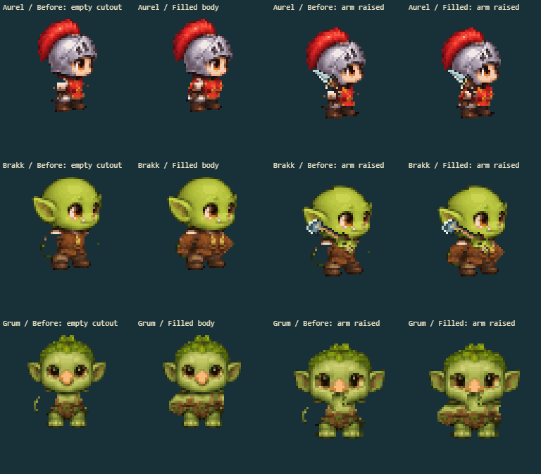
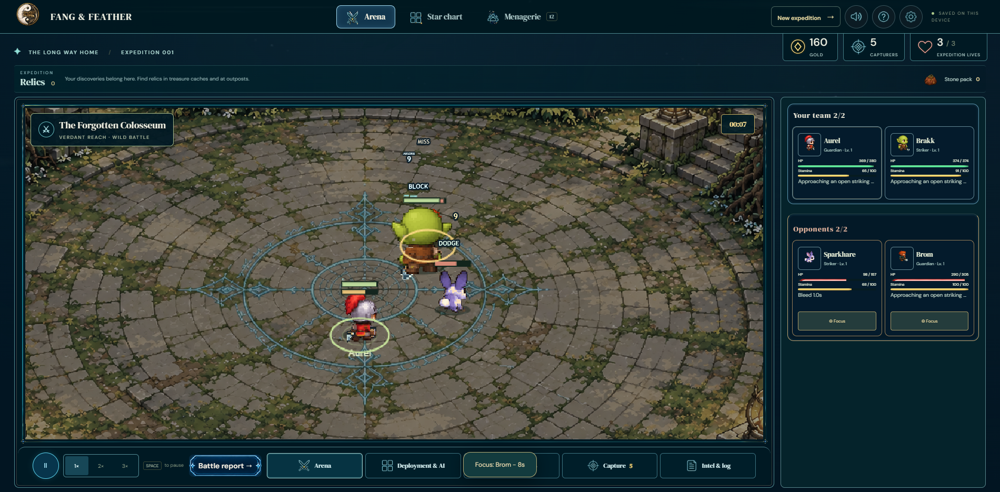
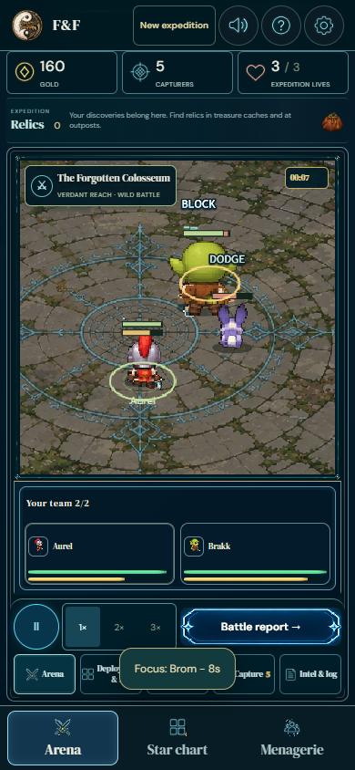

Archived PR65 evidence. Its outside sleeve contour retained a stationary arm shape. Open the corrected melee review and individual combat evidence.
The previous pass left shoulder-shaped holes in the body. The complete shirt, armor or chest now remains beneath the moving arm.

Results and source hashes · Body-only regression checks · 172 holes present on the previous pass
Every sheet shows original art, BEFORE body, FILLED body, BEFORE swing, FILLED swing, recovery and the actual body alone at mid-swing. All eight facings appear at native and enlarged sizes.
12 affected families, all forms, 8 facings, 17 states, both paths. Each player includes a native view and enlarged family selector.
Wild player · Warden player · Decoded front attack · Decoded side attack · Decoded rear get-up
Source desktop recording · Offline phone recording · All 17 affected characters in source/offline combat


The original gaps between skeleton ribs are retained. The verification report also discloses the two unchanged base-branch contact/balance failures.